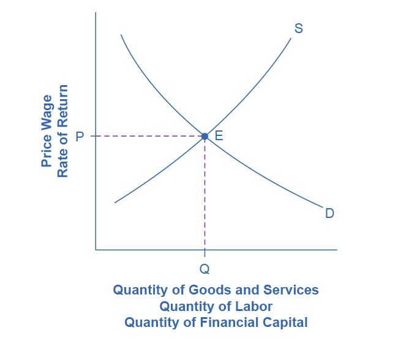
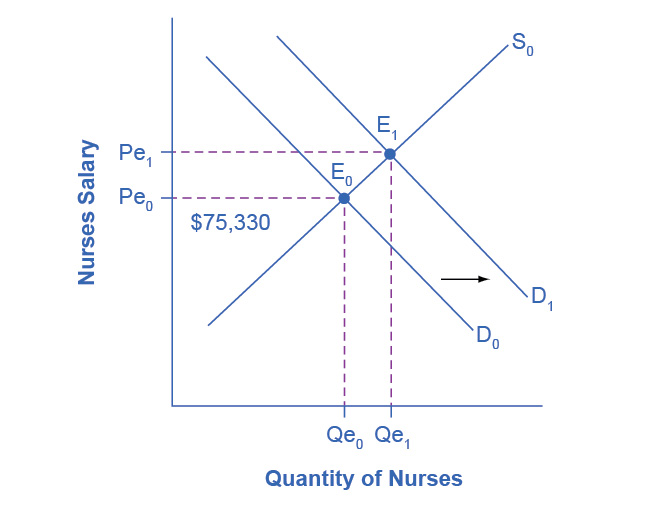
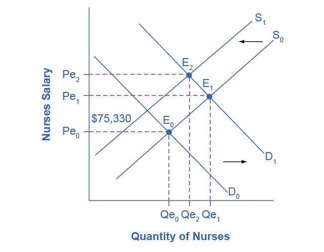

4.3 The Market System as an Efficient Mechanism for Information
Learning Objectives
By the end of this section, you will be able to:
- Apply demand and supply models to analyze prices and quantities
- Explain the effects of price controls on the equilibrium of prices and quantities
Prices exist in markets for goods and services, for labor, and for financial capital. In all of these markets, prices serve as a remarkable social mechanism for collecting, combining, and transmitting information that is relevant to the market—namely, the relationship between demand and supply—and then serving as messengers to convey that information to buyers and sellers. In a market-oriented economy, no government agency or guiding intelligence oversees the set of responses and interconnections that result from a change in price. Instead, each consumer reacts according to that person’s preferences and budget set, and each profit-seeking producer reacts to the impact on its expected profits. The following Clear It Up feature examines the demand and supply models.
Clear It Up
Why are demand and supply curves important?
The demand and supply model is the second fundamental diagram for this course. (The opportunity set model that we introduced in the Choice in a World of Scarcity chapter was the first.) Just as it would be foolish to try to learn the arithmetic of long division by memorizing every possible combination of numbers that can be divided by each other, it would be foolish to try to memorize every specific example of demand and supply in this chapter, this textbook, or this course. Demand and supply is not primarily a list of examples. It is a model to analyze prices and quantities. Even though demand and supply diagrams have many labels, they are fundamentally the same in their logic. Your goal should be to understand the underlying model so you can use it to analyze any market.
Figure 4.9 displays a generic demand and supply curve. The horizontal axis shows the different measures of quantity: a quantity of a good or service, or a quantity of labor for a given job, or a quantity of financial capital. The vertical axis shows a measure of price: the price of a good or service, the wage in the labor market, or the rate of return (like the interest rate) in the financial market.
The demand and supply model can explain the existing levels of prices, wages, and rates of return. To carry out such an analysis, think about the quantity that will be demanded at each price and the quantity that will be supplied at each price—that is, think about the shape of the demand and supply curves—and how these forces will combine to produce equilibrium.
We can also use demand and supply to explain how economic events will cause changes in prices, wages, and rates of return. There are only four possibilities: the change in any single event may cause the demand curve to shift right or to shift left, or it may cause the supply curve to shift right or to shift left. The key to analyzing the effect of an economic event on equilibrium prices and quantities is to determine which of these four possibilities occurred. The way to do this correctly is to think back to the list of factors that shift the demand and supply curves. Note that if more than one variable is changing at the same time, the overall impact will depend on the degree of the shifts. When there are multiple variables, economists isolate each change and analyze it independently.

Figure 4.9 Demand and Supply Curves The figure displays a generic demand and supply curve. The horizontal axis shows the different measures of quantity: a quantity of a good or service, a quantity of labor for a given job, or a quantity of financial capital. The vertical axis shows a measure of price: the price of a good or service, the wage in the labor market, or the rate of return (like the interest rate) in the financial market. We can use the demand and supply curves explain how economic events will cause changes in prices, wages, and rates of return.
An increase in the price of some product signals consumers that there is a shortage; therefore, they may want to economize on buying this product. For example, if you are thinking about taking a plane trip to Hawaii, but the ticket turns out to be expensive during the week you intend to go, you might consider other weeks when the ticket might be cheaper. The price could be high because you were planning to travel during a holiday when demand for traveling is high. Maybe the cost of an input like jet fuel increased or the airline has raised the price temporarily to see how many people are willing to pay it. Perhaps all of these factors are present at the same time. You do not need to analyze the market and break down the price change into its underlying factors. You just have to look at the ticket price and decide whether and when to fly.
In the same way, price changes provide useful information to producers. Imagine the situation of a farmer who grows oats and learns that the price of oats has risen. The higher price could be due to an increase in demand caused by a new scientific study proclaiming that eating oats is especially healthful. Perhaps the price of a substitute grain, like corn, has risen, and people have responded by buying more oats. The oat farmer does not need to know the details. The farmer only needs to know that the price of oats has risen and that it will be profitable to expand production as a result.
The actions of individual consumers and producers as they react to prices overlap and interlock in markets for goods, labor, and financial capital. A change in any single market is transmitted through these multiple interconnections to other markets. The vision of the role of flexible prices helping markets to reach equilibrium and linking different markets together helps to explain why price controls can be so counterproductive. Price controls are government laws that serve to regulate prices rather than allow the various markets to determine prices. There is an old proverb: “Don’t kill the messenger.” In ancient times, messengers carried information between distant cities and kingdoms. When they brought bad news, there was an emotional impulse to kill the messenger. However, killing the messenger did not kill the bad news. Moreover, killing the messenger had an undesirable side effect: Other messengers would refuse to bring news to that city or kingdom, depriving its citizens of vital information.
Those who seek price controls are trying to kill the messenger—or at least to stifle an unwelcome message that prices are bringing about the equilibrium level of price and quantity. However, price controls do nothing to affect the underlying forces of demand and supply, and this can have serious repercussions. During China’s “Great Leap Forward” in the late 1950s, the government kept food prices artificially low, with the result that 30 to 40 million people died of starvation because the low prices depressed farm production. This was communist party leader Mao Zedong's social and economic campaign to rapidly transform the country from an agrarian economy to a socialist society through rapid industrialization and collectivization. Changes in demand and supply will continue to reveal themselves through consumers’ and producers’ behavior. Immobilizing the price messenger through price controls will deprive everyone in the economy of critical information. Without this information, it becomes difficult for everyone—buyers and sellers alike—to react in a flexible and appropriate manner as changes occur throughout the economy.
Bring It Home
Baby Boomers Come of Age
The theory of supply and demand can explain what happens in the labor markets and suggests that the demand for nurses will increase as healthcare needs of baby boomers increase, as Figure 4.10 shows. The impact of that increase will result in an average salary higher than the $75,330 earned in 2020 referenced in the first part of this case. The new equilibrium (E1) will be at the new equilibrium price (Pe1).Equilibrium quantity will also increase from Qe0 to Qe1.

Figure 4.10 Impact of Increasing Demand for Nurses 2020–2030 In 2020, the median salary for nurses was $75,330. As demand for services increases, the demand curve shifts to the right (from D0 to D1) and the equilibrium quantity of nurses increases from Qe0 to Qe1. The equilibrium salary increases from Pe0 to Pe1.
Suppose that as the demand for nurses increases, the supply shrinks due to an increasing number of nurses entering retirement and increases in the tuition of nursing degrees. The leftward shift of the supply curve in Figure 4.11 captures the impact of a decreasing supply of nurses. The shifts in the two curves result in higher salaries for nurses, but the overall impact on the quantity of nurses is uncertain, as it depends on the relative shifts of supply and demand.

Figure 4.11 Impact of Decreasing Supply of Nurses between 2020 and 2030 The increase in demand for nurses shown in Figure 4.10 leads to both higher prices and higher quantities demanded. As nurses retire from the work force, the supply of nurses decreases, causing a leftward shift in the supply curve and higher salaries for nurses at Pe2. The net effect on the equilibrium quantity of nurses is uncertain, which in this representation is less than Qe1, but more than the initial Qe0.
While we do not know if the number of nurses will increase or decrease relative to their initial employment, we know they will have higher salaries.